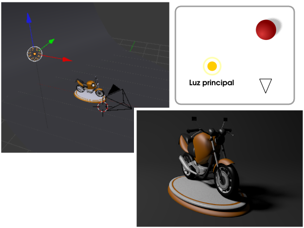
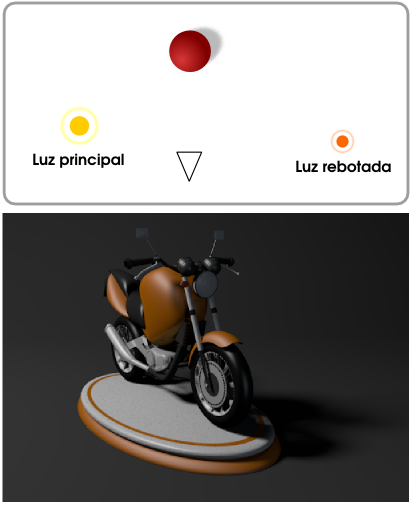
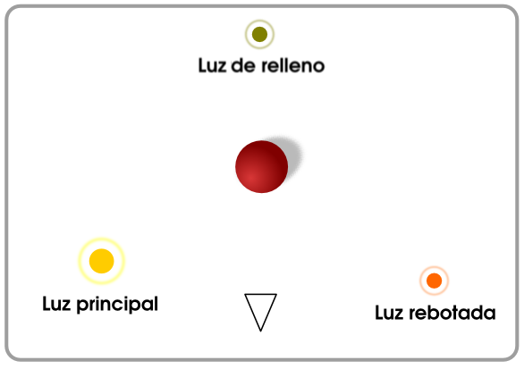
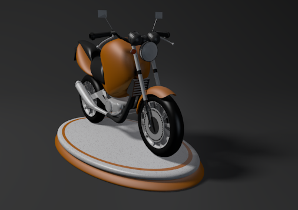

Tres luces
Hay muchas teorías para conseguir una buena iluminación en una escena a base de lámparas. De todas esas teorías la más popular es la que se basa en tres puntos de luz. Este es el esquema general:
- Una luz principal. En función de la escena esta será una lámpara Puntual (para interiores donde la luz provenga de una fuente artificial) o Sol (para exteriores donde claramente la iluminación principal será natural). En nuestro ejemplo optamos por una luz Puntual ya que se trata de un pequeño objeto de juguete. Hemos aumentado Muestras a 20 en la botonera Muestreo de la lámpara. La principal consecuencia en el render es la presencia de muchas zonas a las que no llega la luz lateral y que se muestran de un color completamente negro.

- Una segunda luz complementaria a la anterior y que hace las funciones de luz rebotada. Es un de truco visual por el que damos a entender que hay objetos alrededor y que recogen la luz principal haciendo que una pequeña parte salga rebotada para que el objeto protagonista la recoja. Esta segunda lámpara puede ser Puntual o una Área que emita poca luz; la justa para compensar a la lámpara principal. En nuestro caso (para simplificar al máximo) volvemos a optar una luz Puntual con una Energía muy baja. Esta luz rebotada no debe originar sombras y debe tener un color ligeramente alejado del blanco, como puede ser un azulado. Las consecuencias en el render son todas positivas; el objeto multiplica exponencialmente su apariencia tridimensional así como la sensación de ocupar un sitio en el espacio.

- Una tercera luz de relleno. No es bueno que la parte oscura de un objeto se funda en exceso con la sombra; además esta luz seguirá cumpliendo con el cometido de simular luz rebotada, que ilumina la parte trasera del objeto. Como nuestro modelo no es plano por detrás es muy probable que parte de esta iluminación acabe viéndose desde el encuadre, contorneando los objetos en las zonas excesivamente oscuras para que se separen visualmente de su sombra arrojada. Esta lámpara debe estar situada en una posición alineada con la propia cámara. Una de las mejores opciones para esta luz de relleno es una lámpara Semiesférica . Así que nosotros optamos por ella.

Con todo lo anterior debemos obtener un resultado muy aceptable.
